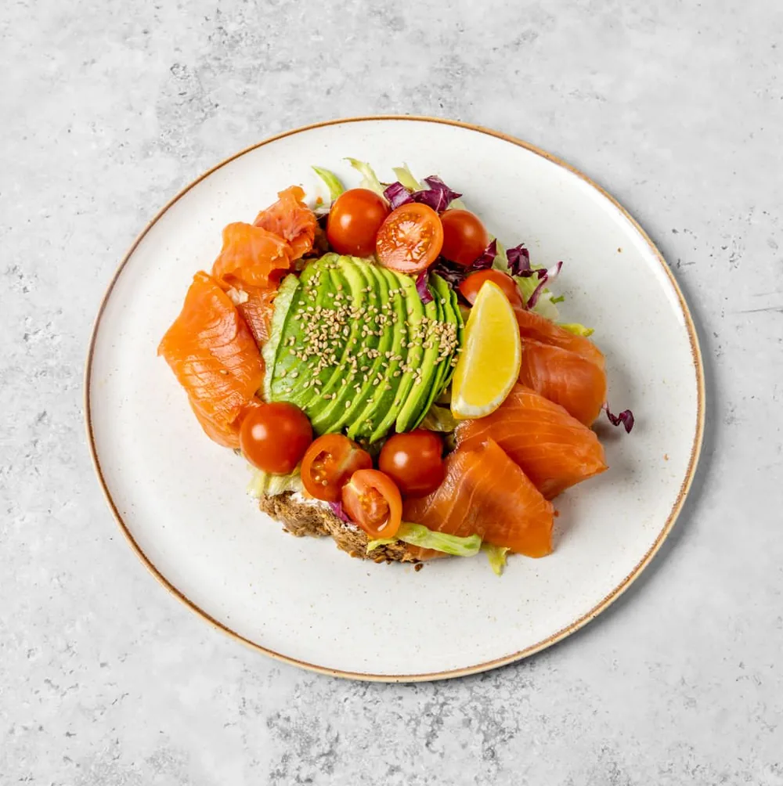
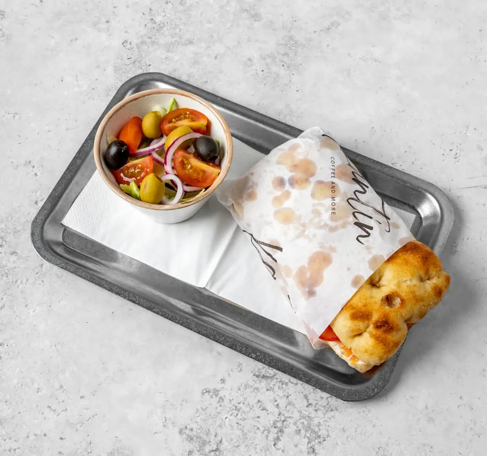
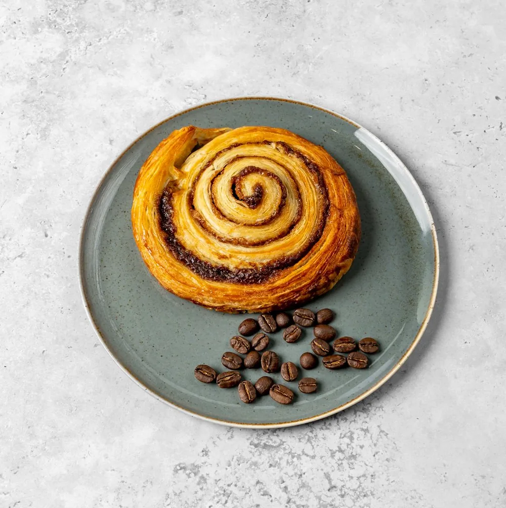
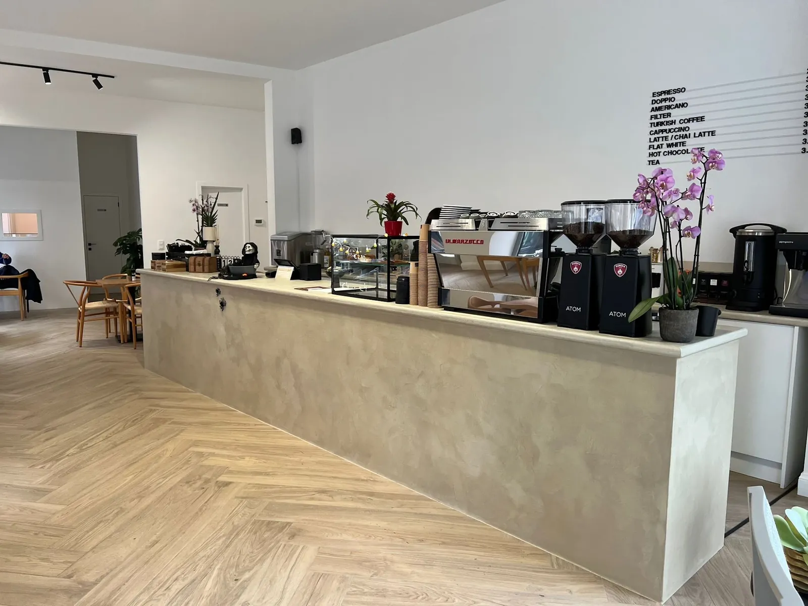
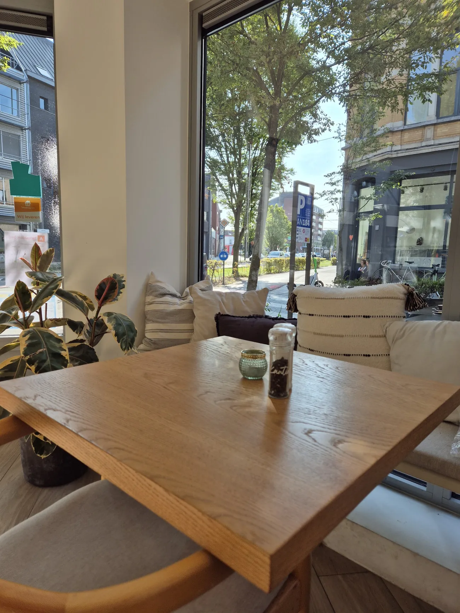
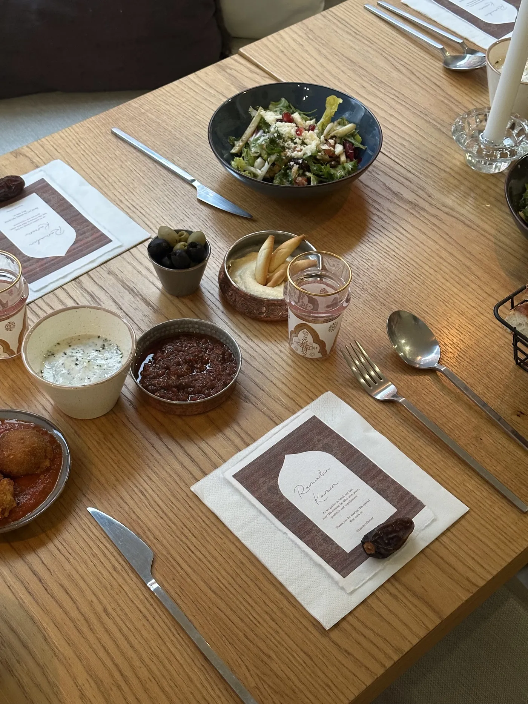
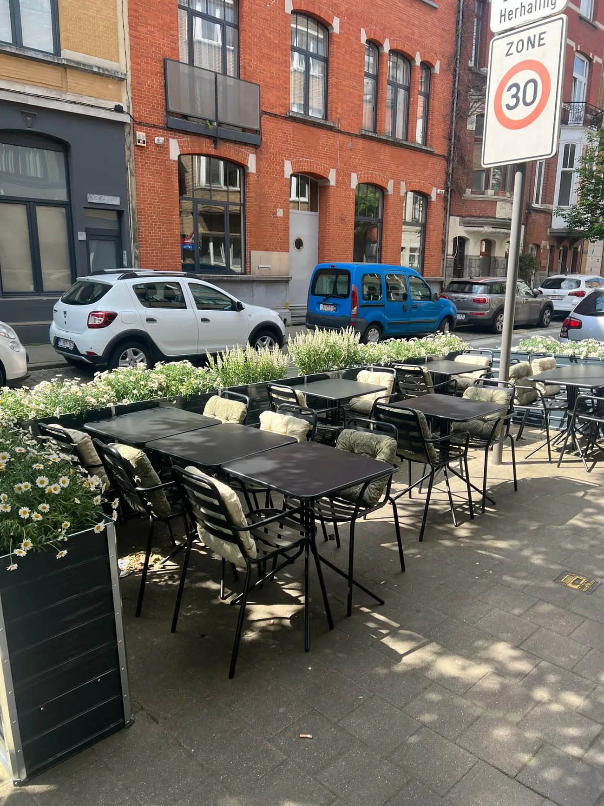

Op de kaartVan panini
Van panini
tot appelcake
Panini's, frisse salades en brunch. En bij de koffie iets wat we zelf bakten.



De zaakBlijf gerust
Blijf gerust
wat langer zitten
Een lange toog, lichte vloer en grote ramen op de Grotesteenweg. Kom voor een snelle koffie, of werk een voormiddag met je laptop.

De toog
Aan het raam"Je kan er ook werken met je laptop."Yasmine op Google

Tijdens de ramadan
Samen het vasten breken
In de ramadan dekken we de tafels voor een iftarmenu. De data en het menu zetten we op Instagram, zodra het zover is.
- Op Instagram@kantincoffeebar
- Een vraag over het menu0484 68 16 62
Op Google
Wat de buren zeggen
4,6gemiddeld uit
80 reviews
80 reviews
"Heel vriendelijk personeel de koffie en het gebak (appelcake) was heerlijk."
Yasmine op Google
"Koffiezaak in Berchem met superlekkere panini's & koffie!"
Fatma C. op Google
"De gemberthee vind ik een aanrader."
Marjan H. op Google

Langskomen
Op de Grotesteenweg
Maandag tot vrijdag9u tot 16u
Zaterdag en zondaggesloten
AdresGrotesteenweg 69
2600 Berchem
2600 Berchem